Project 2 · CS180, Fall 2026 · Tan Ee Khai
Assignment 2 tests on basic convolution with filters in Part 1, using frequency-based applications in Part 2 using a mix of Gaussian Blur filters and impulse filters.
2D convolution is implemented with four for loops, then two for loops, and output is same size as the input ("same"). The filter is flipped before sliding for convolution rather than cross-correlation. For a filter of height kh and width kw, the image is padded with kh // 2 rows of zeros on the top and bottom and kw // 2 columns on the left and right.
Loops 1 and 2 choose which output pixel (i, j) is being computed. Loops 3 and 4 walk over every position (u, v) of the filter, multiply the padded pixel under it by the flipped filter value, and add to a running total. Because the image was padded by kh // 2 and kw // 2, the window that starts at padded (i, j) is centred on original pixel (i, j).
The inner two loops were just an elementwise multiply of a kh × kw patch by the flipped filter, followed by a sum. NumPy can do that in one line, so only the two loops over output pixels remain. Same answer, much faster.
Both versions agree with scipy.signal.convolve2d with insignificant differences (likely due to rounding errors).
The same 9×9 box filter was timed with each version. Four loops were too slow for the full photo, so all three were first compared on a 300×300 crop.
| image | four loops | two loops | scipy |
|---|---|---|---|
| 300×300 crop | 6.99 s | 1.04 s | 0.007 s |
| 1920×2560 photo | not run | 51 s | 0.84 s |
All three do the same calculation, so the speed difference comes from how much work Python does. Four loops do every multiplication one at a time in Python, which is slowest. Two loops let NumPy do each pixel's multiplications at once, so it is several times faster, but it still loops over every pixel in Python. Scipy does the whole convolution in compiled code with no Python loop, so it is the fastest by far.
Only 'same' mode is implemented: the image is zero-padded by kh // 2 rows and kw // 2 columns, so the output matches the input size ('valid' would return a smaller output, 'full' a larger one). Zero padding treats everything outside the image as black, so pixels within four pixels of the edge (half the 9×9 filter) are darkened slightly in the box-filtered result. Scipy's boundary='fill' does the same, which is why the outputs match; 'symm' mirrors the image at the edge and avoids the frame, while 'wrap' borrows pixels from the opposite side.
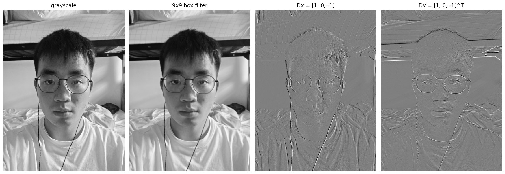
The photo is converted to grayscale with the luminance weights 0.299 R + 0.587 G + 0.114 B from Tutorial 1, since the eye is most sensitive to green and least to blue. The derivative outputs are signed and centred on zero, so they are shown with a symmetric grey colour map: mid-grey is zero, white is positive and black is negative. Dx responds to vertical edges and Dy to horizontal ones.
The cameraman image is convolved with the finite difference operators to get the partial derivatives in x and y. These are combined into a gradient magnitude image, and a threshold then binarises it into an edge map.
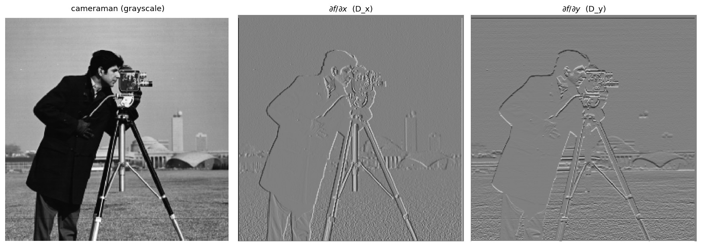
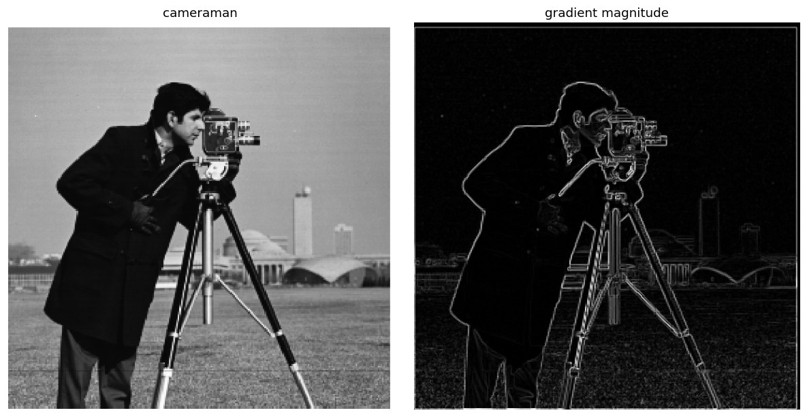
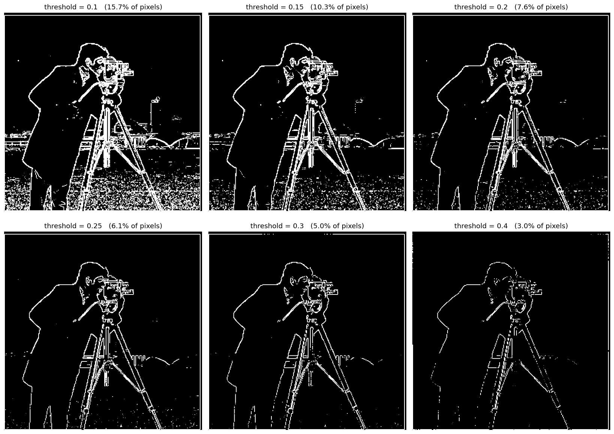
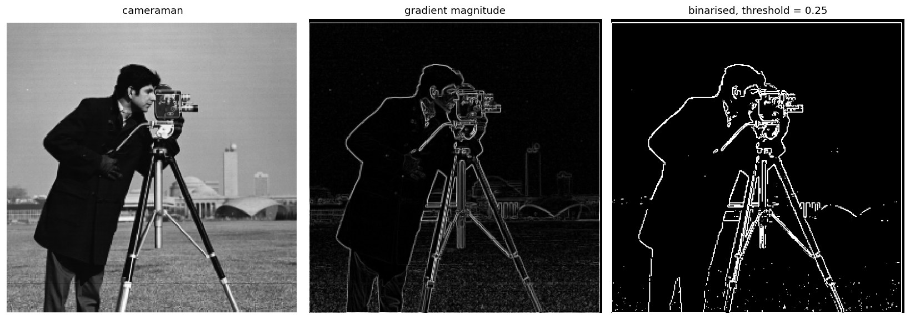
At 0.05 and 0.10 the lawn is covered in speckle, since film grain in the grass produces gradients as large as some real edges. At 0.15 most of that is gone but patches of speckle survive along the bottom of the frame. By 0.25 the noise has cleared, but the distant buildings on the horizon have thinned to almost nothing and the tripod legs are starting to break up, and at 0.35 they are dashed. 0.20 is the compromise: the grass is nearly empty while the coat outline, the tripod, the camera body and the horizon line all survive as continuous edges.
The edge map from Part 1.2 was noisy. The fix is to smooth with a Gaussian before differentiating. This is done two ways and checked for agreement: blur the image with a Gaussian and then convolve with Dx and Dy, or convolve the Gaussian with Dx and Dy first to get two derivative-of-Gaussian filters and apply those to the original image in a single pass.
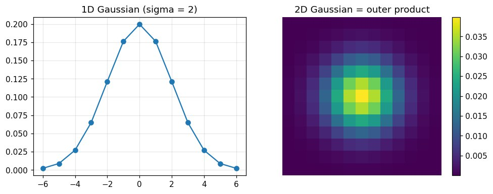
A 2D Gaussian is separable, so it is built as the outer product of a 1D Gaussian with its own transpose. The 1D Gaussian comes from cv2.getGaussianKernel, with weights that sum to 1 so the image's overall brightness is unchanged. Here σ = 2 and the kernel is 13×13, about 6σ + 1, which is wide enough to contain the bell curve before it decays to nothing.
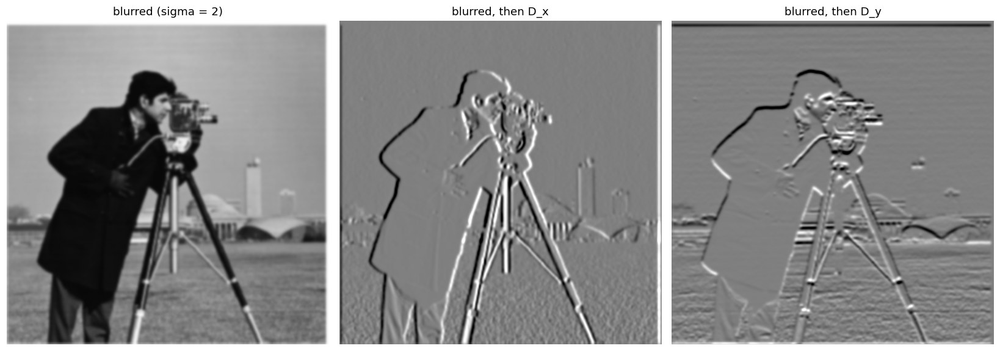
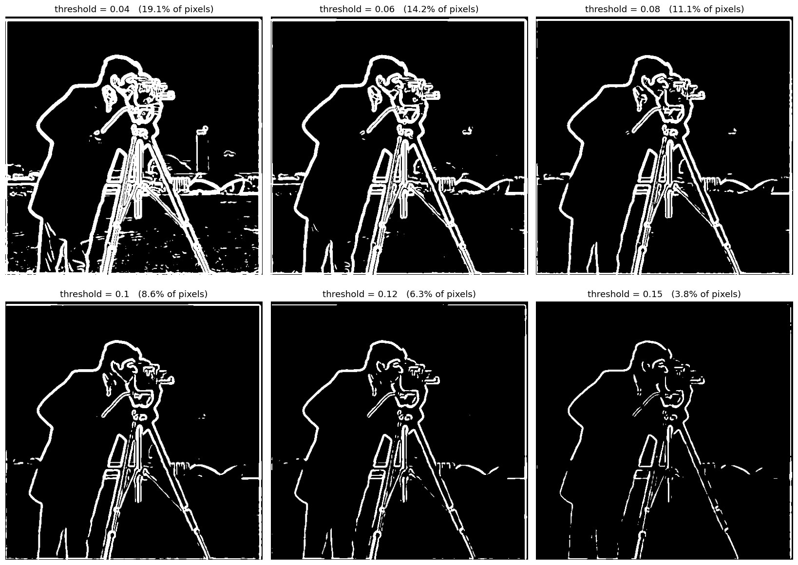
Blurring lowers the gradient magnitudes across the board, since a step spread over several pixels has a smaller per-pixel difference, so the threshold has to come down with it. At 0.02 the contours are fat and the lawn texture is still coming through. By 0.10 the coat outline has started to break up. 0.06 is used: the grass is essentially empty, and the coat, tripod, camera and horizon line all survive as continuous curves.
The thin frame visible at the lower thresholds is not an artefact of the method. The provided cameraman.png is 542×540 with a pure-white margin around the classic 512×512 photograph, and that margin is a genuine step edge.
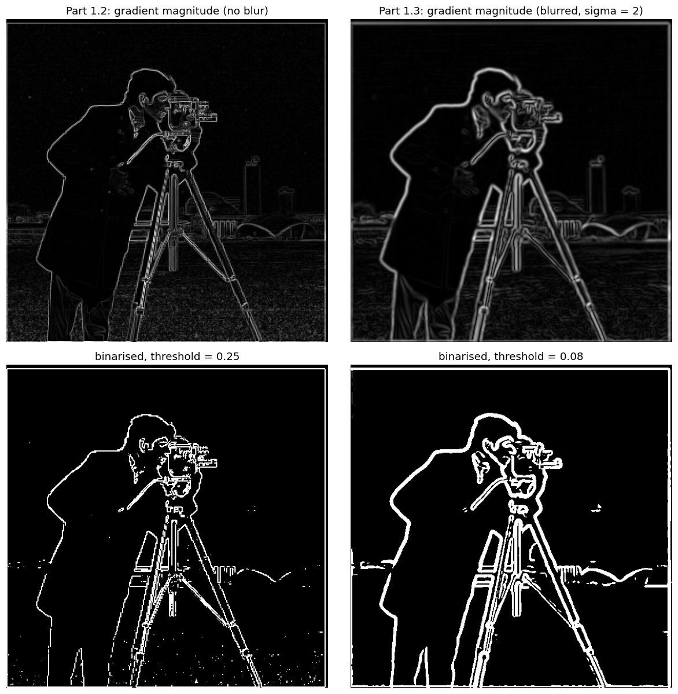
The contours are continuous instead of broken. In Part 1.2 the coat outline and the tripod legs are dotted and dashed, and the lawn is scattered with isolated specks. After blurring, those same contours read as unbroken curves and the lawn is almost empty. Noise shows up as lone pixels with nothing beside them, whereas a real edge is a long curve on which neighbouring pixels also respond, so averaging each pixel with its neighbours weakens the former and reinforces the latter.
The edges are thicker and softer. A Gaussian spreads a sharp step over several pixels, so the derivative peak is wider and lower and the lines look fuzzier. Fine detail is smoothed away with the noise: the texture on the camera body and the far buildings on the horizon are much less distinct than in Part 1.2. The blur is a scale-selection dial, not only a noise filter.
The whole image is dimmer. The blurred gradient magnitude is visibly darker everywhere, because spreading a step across several pixels makes each individual difference smaller. That is why the Part 1.2 threshold of 0.20 is useless here and a much lower one, 0.06, is needed to get a comparable edge map.
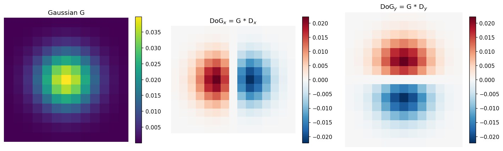
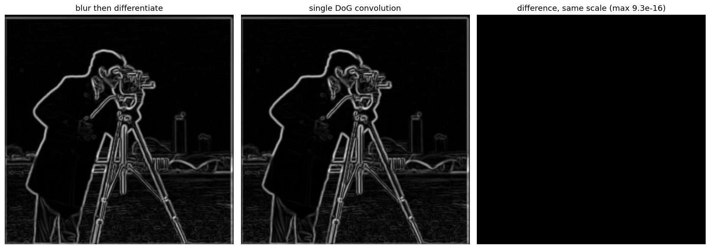
Convolution is associative, so blurring and then differentiating is the same as convolving with a filter that has already been differentiated: (f * G) * Dx = f * (G * Dx). That means G * Dx and G * Dy can be precomputed once and applied to the image in a single pass.
Each DoG filter is a bell curve with one positive lobe and one negative lobe, split along the axis it differentiates. Applied to a flat region the two lobes cancel and the response is zero; across an edge they do not cancel, and the output is large. Unlike the bare [1, −1], the difference is taken between weighted averages of many pixels rather than two single ones, which is why it is less sensitive to a lone noisy pixel.
A Gaussian blur is a low-pass filter: it keeps the slow, smooth parts of an image and throws away the fast, fine parts. So if the blurred version holds only the low frequencies, then original − blurred is the high frequencies, which is the fine detail: edges, texture, small features. An image looks sharper when its high frequencies are stronger, so the trick is to add some of that detail back on top of the original:
sharpened = original + alpha * (original - blurred)
alpha is a tunable parameter to control how much extra detail to add. This is called unsharp masking.
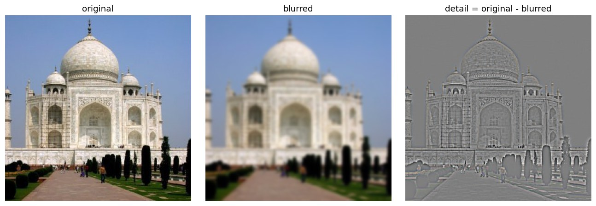
Flat regions such as the sky come out mid-grey, meaning there was nothing there to lose. The outlines of the dome, the archways and the trees show up clearly, because that is where the blur did its damage.
The two passes, blur and then combine, can be done in one. Rearranging the definition:
sharpened = original + alpha * (original - blurred)
= (1 + alpha) * original - alpha * blurred
blurred is original convolved with the Gaussian G, and original itself can be written as a convolution with the unit impulse e, a kernel that is all zeros except a single 1 in the middle. So:
sharpened = original * [ (1 + alpha) * e - alpha * G ]
def make_unsharp_mask(gaussian_kernel, alpha):
size = gaussian_kernel.shape[0]
impulse = np.zeros((size, size))
impulse[size // 2, size // 2] = 1
return (1 + alpha) * impulse - alpha * gaussian_kernel
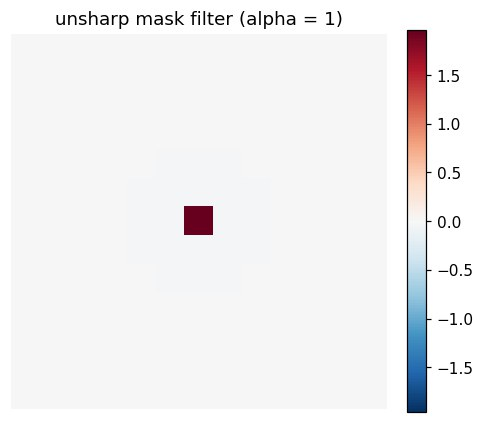
The filter is a positive spike in the middle surrounded by a shallow negative bowl. It boosts each pixel and subtracts a bit of its neighbourhood, so a pixel that already stands out from its surroundings gets pushed further apart from them, which is what "sharper" looks like. The weights still sum to 1, so the overall brightness is unchanged.
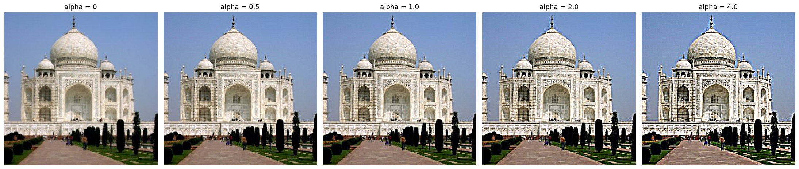
Small alpha strengthens the edges (high frequencies) only slightly, making the image look crisper. At alpha = 4.0 the image is oversharpened: edges become much stronger than the rest of the image. A dark halo appears around the dome because the high-frequency layer is positive on the bright side of an edge and negative on the dark side, so adding it back at a large multiple pushes the bright side brighter and the dark side darker, overshooting the original values in a band beside the edge. The gardens also become grainy, because noise and fine texture are high frequency too and get amplified by the same factor.
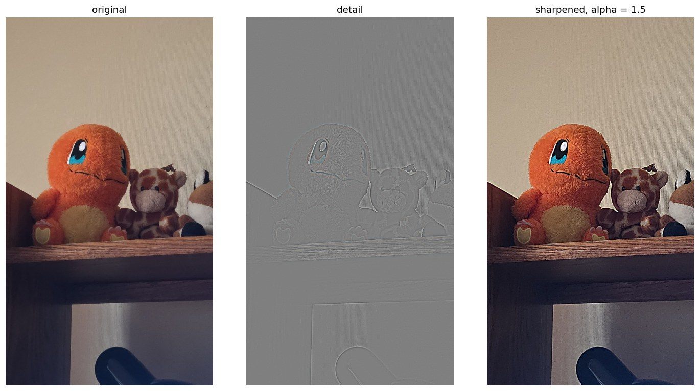
An image that is already sharp is blurred deliberately, then the sharpening is run on the blurred version and compared against the original.
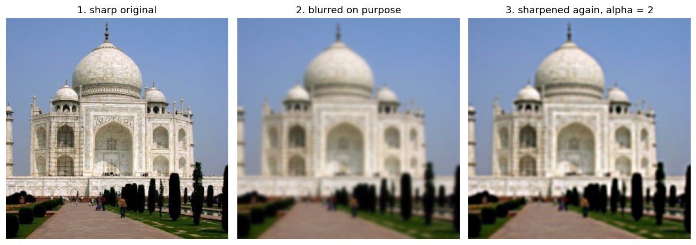
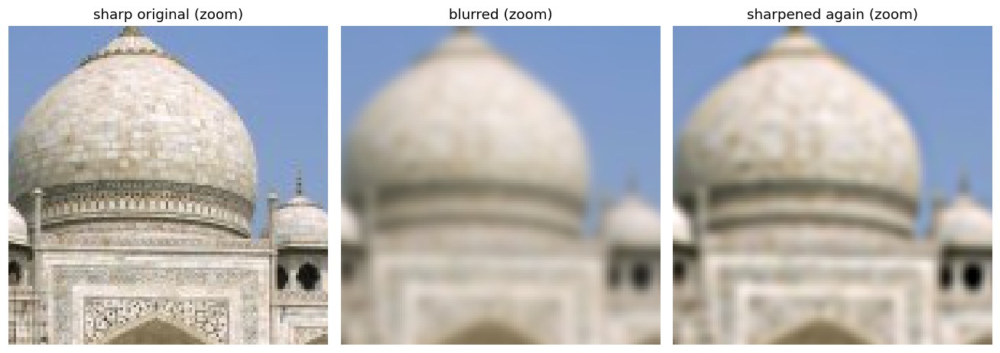
The dome's outline and frame of the arch are restored and largely close to original. The texture on the surface however has been lost, and cannot be recovered even if alpha is increased. This shows clearly that sharpening is not an inverse of blurring. The first blur already loses details on the high frequencies, and hence trying to retrieve fine details from the already blurred image will not be able to fully retrieve them. Sharpening only scales up whatever detail is still present, so where the blur has already flattened the texture to almost nothing, any value of alpha multiplied by that is still almost nothing.
A hybrid image reads as one thing up close and another from far away. Up close, fine detail dominates what you see; from a distance the eye cannot resolve that detail and only the broad shapes come through. So the high frequencies of one image are combined with the low frequencies of another. Following Oliva, Torralba and Schyns (2006), the low-pass filter is a Gaussian and the high-pass filter is the original minus its Gaussian blur.
low = blur(image) the broad shapes high = image - blur(image) the fine detail hybrid = low_of_far_image + high_of_close_image
Each filter has its own σ because the two pictures do not need the same cutoff.
The sample pair provided with the assignment. Nutmeg's head is tilted, so each image is rotated until the line between the eyes is level before scaling and cropping. Derek supplies the low frequencies and Nutmeg the high frequencies.
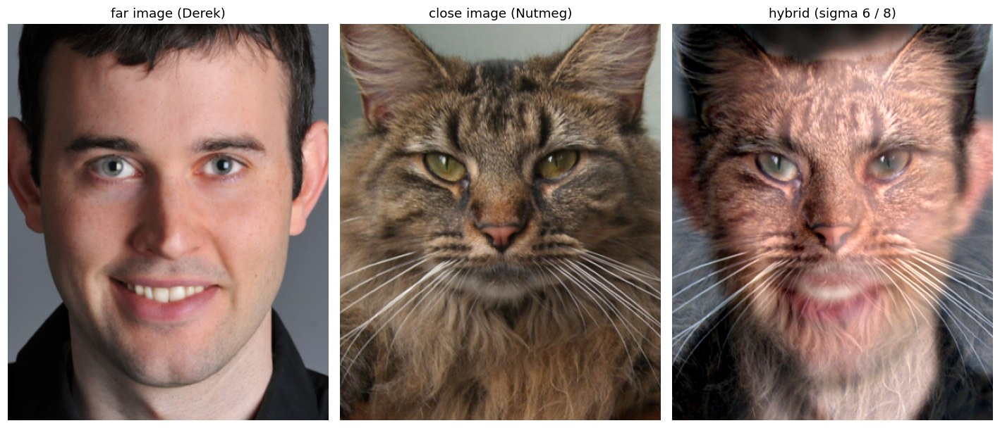
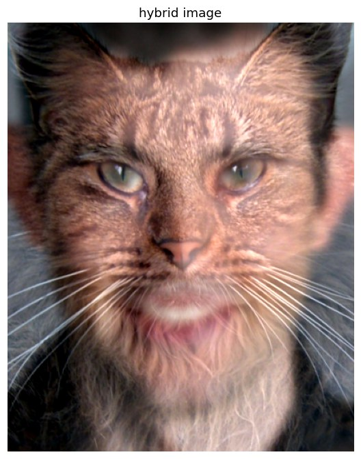
Up close, the cat's stripes, its distinct eyes and its nose stand out. From further away, Derek's broad features take over: his face shape, dark hair, eyes, nose and smile. The switch was easier to see by squinting than by stepping back. Squinting blurs the image directly, acting as a low-pass filter that removes the high frequencies regardless of how large the image is on screen, whereas stepping back only hides detail once it becomes too small to resolve. Nutmeg's whiskers are thin but bright and high-contrast, so they stay visible until you are quite far from the screen.
Up close the hybrid shows Professor Trelawney, worried; from a distance it shows my friend Cynthia, smiling. Cynthia supplies the low frequencies and Trelawney the high frequencies.
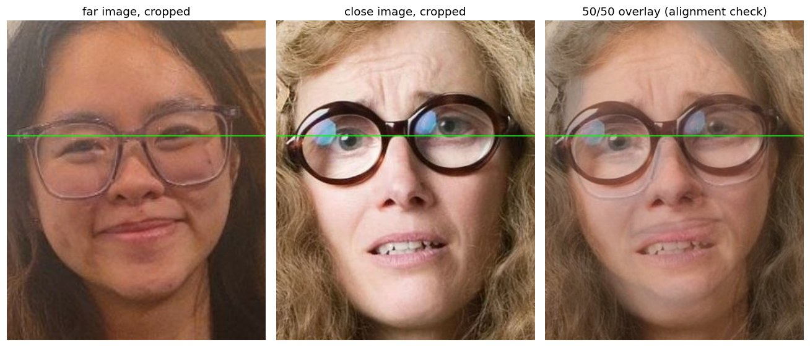
The two faces have to occupy the same place for the effect to work. Each image is scaled so its eyes are the same distance apart, then cropped so the eyes land at the same spot. The eye positions were read off each image by hand. In the overlay, the eyes sit on the green line in both and the mouths land close together.
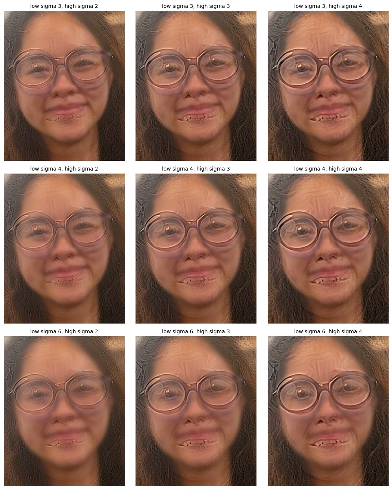
The two sigmas were chosen by trying a grid of values. The high-pass σ sets how much of the close image survives: too small and it is a faint tracing, too large and its heavy features leak into the far view. The low-pass σ sets how clean the far image is: too small and its detail competes with the close image, too large and it turns to mush. The final choice is σ = 4 for the low pass and σ = 3 for the high pass.
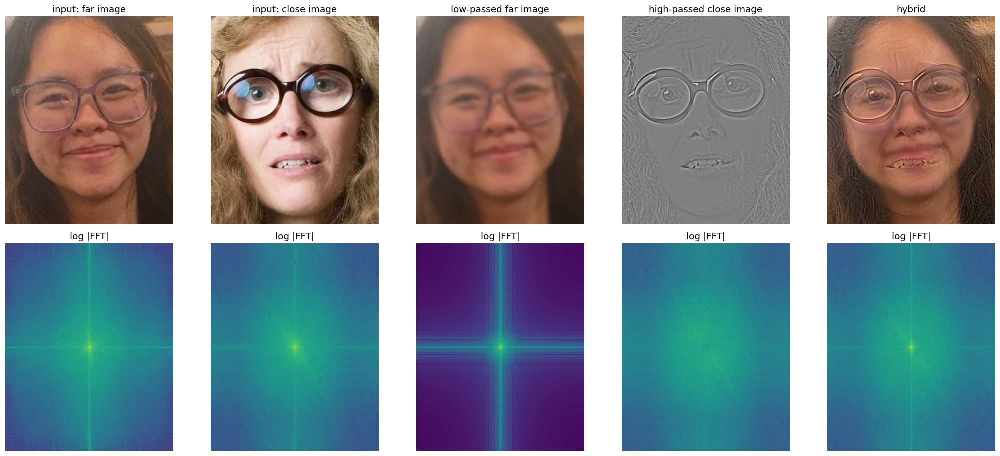
In the Fourier plots, the centre represents the broad, smooth parts of the image and the edges represent the fine details. The two input images have energy spread from the centre outwards, since they contain both. After the low-pass filter, Cynthia's image is bright only in a small area at the centre, so most of the fine detail has been removed. After the high-pass filter, Trelawney's image no longer has a strong bright centre, and its energy is spread out towards the edges instead, which is the fine detail that was kept. The hybrid looks like a combination of the two: it has the bright centre from Cynthia's image and the spread-out energy from Trelawney's. The bright horizontal and vertical lines through every plot, which are most obvious in the low-passed one, do not seem to come from the faces themselves. From what I understand, they appear because the Fourier transform treats the image as if it repeats, so the mismatch between opposite edges of the image shows up as these lines.
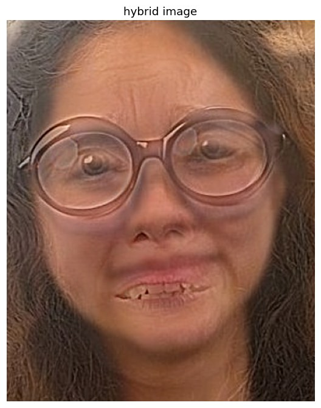
Trelawney works much better as the high-pass image simply because her features are much stronger, including wrinkles, eyes and teeth, which show up strongly at high frequency. However, when her image is low-passed instead, her dark frames show up at every distance, which overpowers the high-pass image of Cynthia. The most obvious artefact is the mouth expression, which remains visible even at a distance.
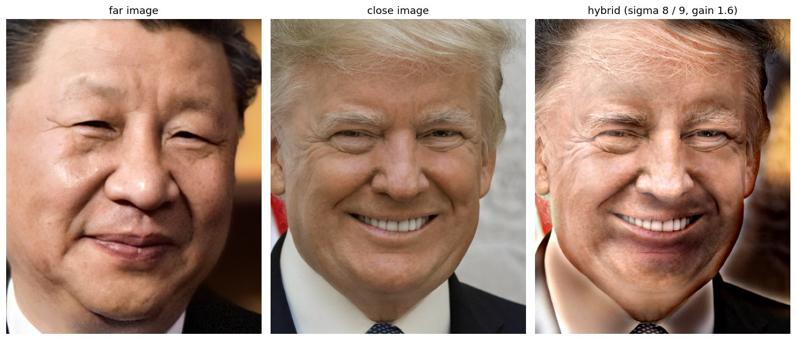
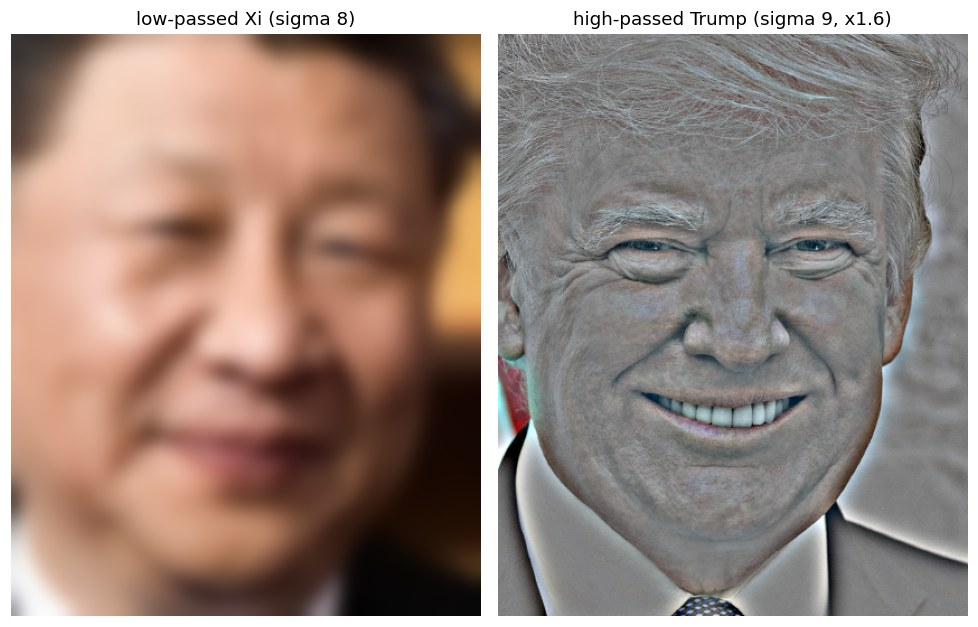
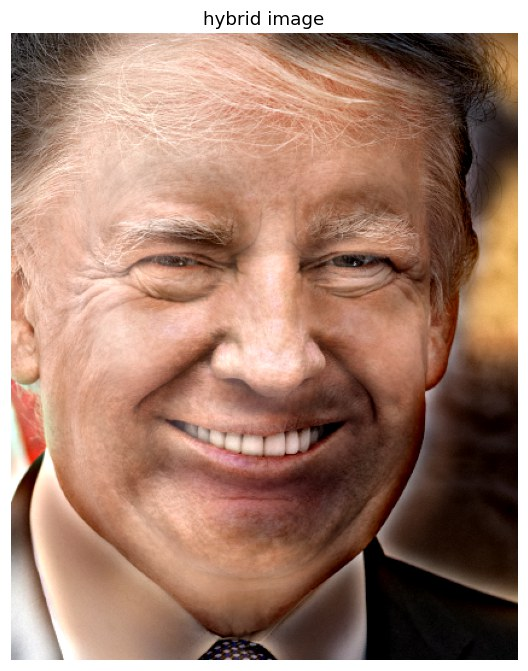
Both are frontal official portraits from Wikimedia Commons. Neither is perfectly level, so alignment gets one extra step: each image is rotated so the line between the eyes is horizontal before scaling and cropping. The official portrait used for the close image is heavily retouched, so its fine detail is faint; the high-pass part is scaled up by 1.6 before adding so the close reading comes through.
Trump has much paler skin, blonde hair and white teeth, which are low-frequency features strong enough to show at every distance, so he does not work as the far image. On the other hand, Xi Jinping has a much smoother face, which suits being used as the low frequency. The hybrid image looks a bit cursed, though.
The simplest idea I learnt from this project is that blurring and sharpening can both be done just by convolving an image with simple filters. What surprised me is how much comes out of one step: blurring an image and subtracting the blur from the original separates the fine detail from the broad shapes, and that single idea is behind edge detection, sharpening and hybrid images. It also showed me the limit of sharpening, since once a blur removes fine detail, sharpening can only boost what is left rather than bring it back.